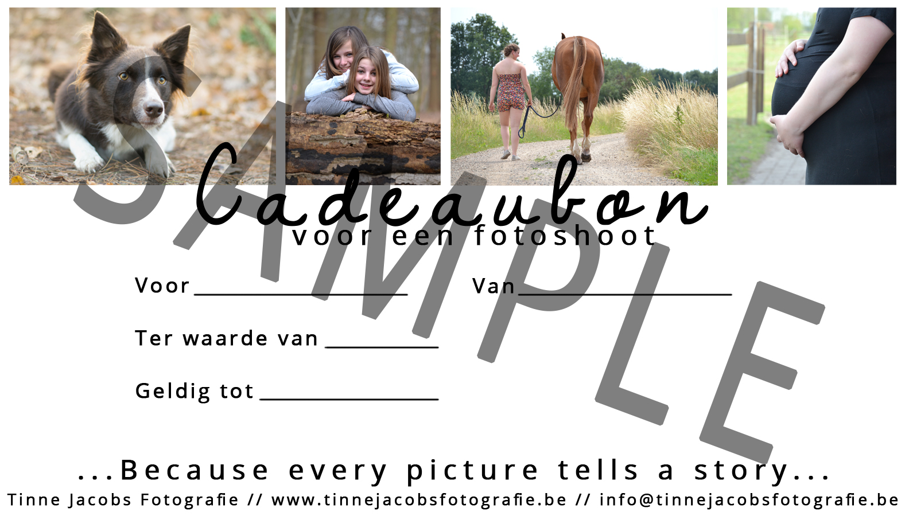

Paarden
Bij paarden is het mogelijk om zowel portret-, rij- als losgooifoto's te maken. Hiervoor reken ik +- 1 uur.
Achteraf ontvang je 25-45 foto's op webformaat met logo en mag je hiervan één foto kiezen die je op origineel formaat zal krijgen. Uiteraard is nabestelling steeds mogelijk.

Honden
Bij honden worden er foto's gemaakt van zowel de hond alleen als hond met baas. Hiervoor reken ik 30 - 60 minuten.
Achteraf ontvang je 25-45 foto's op webformaat met logo en mag je hiervan één foto kiezen die je op origineel formaat zal krijgen. Uiteraard is nabestelling steeds mogelijk.

Mensen
Bij mensen is het aanbod gevariëerd: er kunnen foto's gemaakt worden van één persoon, beste vriendinnen of een koppel en zelfs zwangerschap is mogelijk. Dit is uiteraard afhankelijk van wat het model nodig heeft. Hiervoor reken ik 30 - 60 minuten.
Achteraf ontvang je 20-40 foto's op webformaat met logo en mag je hiervan één foto kiezen die je op origineel formaat zal krijgen. Uiteraard is nabestelling steeds mogelijk.
Overige
Heb je nog andere ideeën? Wil je mij graag als fotografe voor een communicant? Misschien voor een trouw? Of voor een ander evenement? Contacteer me gerust, ik sta steeds open voor nieuwe ervaringen!
Cadeaubon
Ben je nog op zoek naar een geschikt cadeautje voor een verjaardag, kerstmis of nieuwjaar? Of gewoon zomaar? Het is ook mogelijk om een cadeaubon te geven voor een fotoshoot.
Algemene Voorwaarden
- De foto’s mogen gebruikt worden voor mijn portfolio, tenzij anders afgesproken.
- De fotoshoot kan geannuleerd worden tot 24 uur op voorhand.
- Bij eventueel slecht weer zal er de dag op voorhand beslist worden of de fotoshoot doorgaat, geannuleerd of verplaatst wordt.
- Tinne Jacobs Fotografie is niet verantwoordelijk voor ongevallen voor, tijdens of na de fotoshoot.
- De prijzen zijn inclusief een kleine verplaatsing.
- De fotoshoots zullen steeds op locatie doorgaan omdat Tinne Jacobs Fotografie niet over een studio beschikt.
- Er wordt geprobeerd de foto’s binnen 2 weken af te werken, afhankelijk van de drukte.
- Mijn logo moet altijd op de foto’s blijven staan, en mag dus niet weggewerkt of weggeknipt worden.
- Foto’s zonder logo en op origineel formaat mogen enkel gebruikt worden voor privégebruik en dus niet gepubliceerd worden.
- Bij het niet naleven van deze voorwaarden, kan er een sanctie volgen.